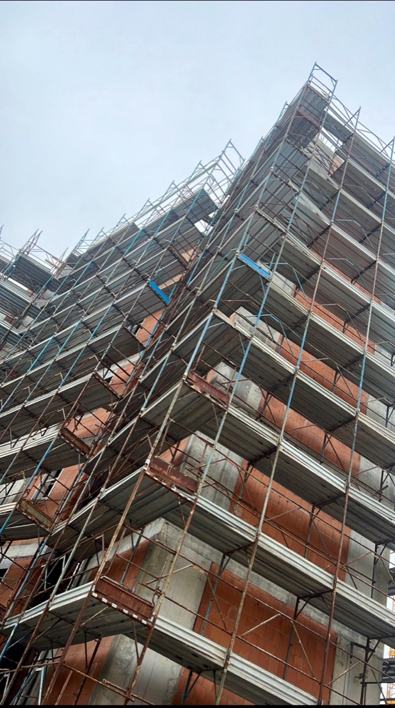
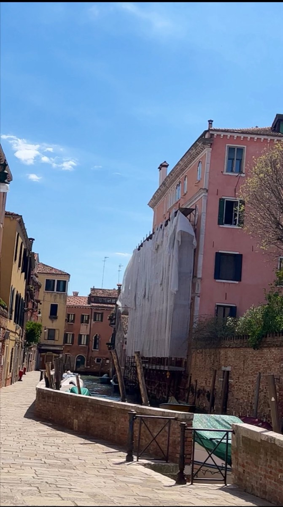
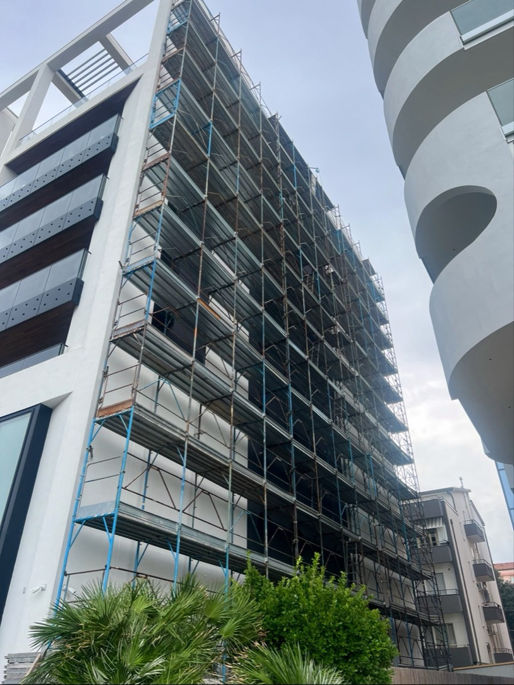
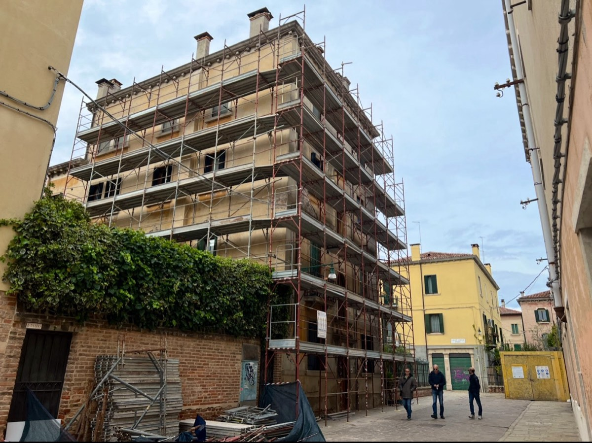
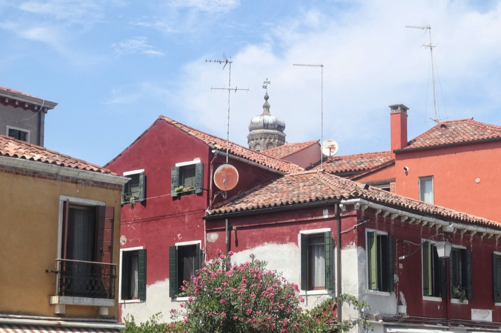

Venezia · Mestre · centro storico
Ponteggi sicuri. Case rifatte a regola d'arte.
Costruzioni, ponteggi, ristrutturazioni e rifacimento tetti. Anche tra le calli e lungo i rii di Venezia.



- 5,0su Google, 4 recensioni
- S.r.l.s.Kleqka Safet, Venezia
- Mestresede in Via Umbria 9
- Veneziacantieri anche nel centro storico
01 · Lavori
Dal ponteggio al tetto, una sola impresa.
- 01
Ponteggi
Montaggio di ponteggi per facciate, tetti e cantieri, con parapetti e protezioni. Anche nelle calli strette e lungo i rii di Venezia.
- 02
Ristrutturazioni
Appartamenti e case da rifare, dentro e fuori. Un solo referente dal sopralluogo alla consegna.
- 03
Rifacimento tetti
Coperture da rifare o riparare, con il ponteggio già montato dalla stessa squadra.
- 04
Costruzioni
Opere in muratura e cemento armato: casseri, getti, vani scala e ascensore.
02 · Il ponteggio
Prima la sicurezza. Poi il lavoro.
- 01Basette e piano d'appoggioIl ponteggio parte da un appoggio livellato, anche sulla fondamenta di un rio.
- 02Montanti e traversiLa struttura sale piano per piano, a filo della facciata.
- 03Impalcati e parapettiOgni piano di lavoro ha il suo tavolato e i parapetti.
- 04Ancoraggi e diagonaliIl ponteggio viene ancorato al muro e controventato.
- 05Telo di protezioneLa facciata si chiude: polvere e materiale restano dentro, la calle resta libera.
03 · Cantieri
Foto dai nostri cantieri.
Dal profilo Google dell'impresa. Trascinate per scorrere.

VeneziaPonteggio su un palazzo in calle VeneziaFacciata protetta sul rio Cemento armatoCasseri per il getto RistrutturazioneNuovi scarichi nel vano ResidenzialePonteggio su più piani

Chi siamo
Safet, la sua squadra, i vostri tempi.
Kleqka Safet è un'impresa edile di Mestre guidata da Safet Kleqka. Montiamo i ponteggi con le nostre mani e facciamo il lavoro che c'è dietro: facciata, tetto, interni. In terraferma e a Venezia.
"Safet si è rivelato una persona precisa e disponibile. Siamo molto soddisfatti dell'esito finale della ristrutturazione."
Ardian M., recensione Google
"Ditta professionale che opera anche sul suolo veneziano, ponteggi provvisti di tutti i sistemi di sicurezza."
Hakan R., recensione Google
04 · Come lavoriamo
Quattro passi, un solo referente.
- 01
Sopralluogo
Veniamo a vedere casa, facciata o tetto, anche in centro storico.
- 02
Preventivo
Lavori, tempi e costi messi per iscritto prima di partire.
- 03
Ponteggio e lavori
Montiamo il ponteggio e lavoriamo con la stessa squadra.
- 04
Consegna
Smontiamo, puliamo e vi consegniamo il lavoro finito.
05 · Contatti
Ditemi cosa c'è da fare.
Un sopralluogo, un ponteggio, un tetto da rifare. Chiamate o scrivete: vi rispondiamo.
- Telefono e WhatsApp388 987 5754
- SedeVia Umbria 9, 30174 Venezia Mestre
- ZonaMestre, terraferma e centro storico di Venezia
Via Umbria 930174 Venezia Mestre
Apri in Google Maps